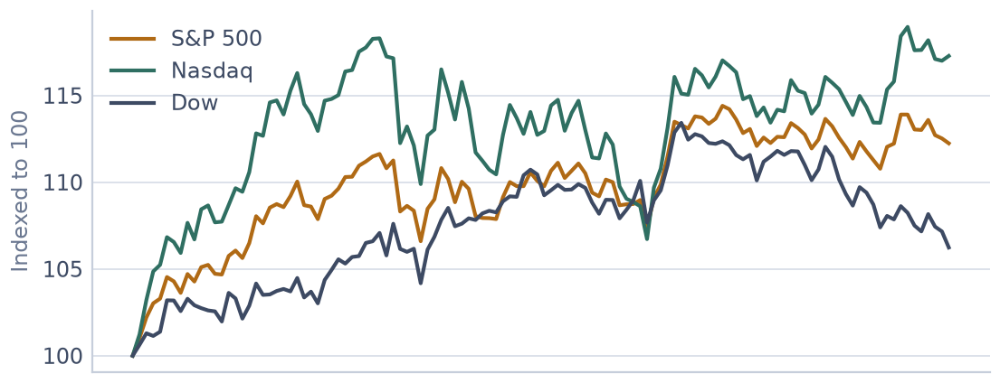
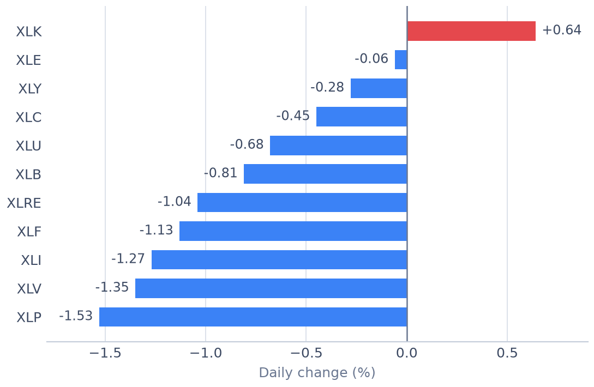

US Market
2026-09-29 미국증시 마감 시황
2026-09-29 미국 증시는 S&P 500 7,670.84(-0.17%), 나스닥 종합 26,797.54(-0.09%), 다우존스 51,349.92(-0.26%)로 마감했습니다. 11개 업종 가운데 3개가 오르고 8개가 내렸습니다. 아래에서 지수 마감 수치, 강세·약세 섹터, 자금이 어느 쪽으로 움직였는지, 그리고 국내 증시에서 이어서 볼 지점까지 순서대로 정리했습니다.
지수 마감
S&P 500은 7,670.84로 전 거래일 대비 ▼ 12.85포인트(-0.17%) 움직였습니다. 최근 5거래일 -1.21%, 20거래일 -0.20%입니다.
나스닥 종합은 26,797.54로 전 거래일 대비 ▼ 22.84포인트(-0.09%) 움직였습니다. 최근 5거래일 -1.64%, 20거래일 +1.62%입니다.
다우존스는 51,349.92로 전 거래일 대비 ▼ 131.59포인트(-0.26%) 움직였습니다. 최근 5거래일 -0.99%, 20거래일 -3.45%입니다.
세 지수의 등락률 격차는 0.17%포인트로 크지 않았습니다. 특정 업종이 지수를 끌고 갔다기보다 시장 전체가 비슷한 방향으로 움직인 날에 가깝습니다.
| 지수 | 종가 | 등락 | 5거래일 | 20거래일 |
|---|---|---|---|---|
| S&P 500 | 7,670.84 | ▼ 12.85 (-0.17%) | -1.21% | -0.20% |
| 나스닥 종합 | 26,797.54 | ▼ 22.84 (-0.09%) | -1.64% | +1.62% |
| 다우존스 | 51,349.92 | ▼ 131.59 (-0.26%) | -0.99% | -3.45% |

강세 섹터
이날 가장 강했던 업종은 헬스케어(XLV)로 +0.33% 올랐습니다. 이어 필수소비재(XLP) +0.27%, 에너지(XLE) +0.10% 순이었습니다.
헬스케어 업종은 최근 20거래일 수익률도 +0.06%로 플러스입니다. 하루 반등이 아니라 한 달 가까이 이어진 흐름의 연장선으로 볼 수 있습니다.
약세 섹터
반대로 가장 약했던 업종은 커뮤니케이션(XLC)로 -1.58% 내렸습니다. 경기소비재(XLY) -1.41%, 금융(XLF)도 -1.19%로 부진했습니다.
커뮤니케이션 업종은 최근 5거래일 기준으로도 -3.11%입니다. 하루 급락이 아니라 며칠에 걸쳐 자금이 빠지고 있는 쪽에 가깝습니다.
업종별 등락률
| 업종 | 티커 | 종가 | 등락률 | 5거래일 | 20거래일 |
|---|---|---|---|---|---|
| 헬스케어 | XLV | 171.26 | ▲ +0.33% | +1.33% | +0.06% |
| 필수소비재 | XLP | 82.28 | ▲ +0.27% | +0.44% | -3.71% |
| 에너지 | XLE | 62.10 | ▲ +0.10% | -0.58% | -0.93% |
| 부동산 | XLRE | 41.35 | ▼ -0.51% | -2.91% | -7.04% |
| 소재 | XLB | 49.47 | ▼ -0.66% | -0.48% | -6.98% |
| 유틸리티 | XLU | 39.25 | ▼ -0.66% | -3.47% | -8.14% |
| 기술 | XLK | 194.53 | ▼ -0.89% | -0.16% | +4.76% |
| 산업재 | XLI | 168.78 | ▼ -0.97% | -0.71% | -4.72% |
| 금융 | XLF | 54.19 | ▼ -1.19% | -3.06% | -6.73% |
| 경기소비재 | XLY | 109.00 | ▼ -1.41% | -2.88% | -7.00% |
| 커뮤니케이션 | XLC | 111.18 | ▼ -1.58% | -3.11% | -1.60% |

자금은 어디로 움직였나
업종을 성격별로 묶어 보면 경기민감 업종(경기소비재·금융·산업재·소재·에너지) 평균이 -0.83%, 방어 업종(필수소비재·헬스케어·유틸리티·부동산) 평균이 -0.14%, 기술·커뮤니케이션 평균이 -1.24%입니다.
방어 업종이 경기민감 업종을 0.69%포인트 앞섰습니다. 경기 변동에 덜 흔들리는 쪽으로 자금이 옮겨간 '위험회피(리스크오프)' 구도입니다. 지수가 올랐더라도 내용은 방어적이었다는 뜻이라, 지수 등락만 보면 놓치기 쉬운 대목입니다.
반면 기술·커뮤니케이션은 상대적으로 뒤처졌습니다. 시가총액 비중이 큰 업종이 쉬어 가면 지수 상승 폭이 제한되기 쉽습니다.
시장의 폭과 업종 간 격차
11개 업종의 평균 등락률은 -0.65%, 1위와 11위의 격차는 1.91%포인트였습니다. 상승 3개, 하락 8개입니다.
하루가 아니라 흐름으로 보면
기간을 넓혀 보면 최근 5거래일 1위는 헬스케어(XLV) +1.33%, 꼴찌는 유틸리티(XLU) -3.47%입니다. 20거래일 기준으로는 기술(XLK)가 +4.76%로 앞서 있습니다.
당일 1위와 5거래일 1위가 헬스케어으로 같습니다. 하루 반등이 아니라 최근 며칠 이어져 온 주도 업종이라는 뜻이고, 이런 연속성은 다음 거래일에도 이어질 확률이 상대적으로 높습니다.
한 달 기준 1위인 기술 업종이 이날은 -0.89%로 쉬어 갔습니다. 많이 오른 업종에서 차익 실현이 나오는 흐름인지, 추세가 꺾이는 신호인지는 며칠 더 봐야 판단할 수 있습니다.
국내 증시에서 볼 지점
국내 증시에서 먼저 볼 곳은 반도체입니다. 미국 기술 업종(XLK)이 -0.89%로 밀렸기 때문에, 삼성전자·SK하이닉스가 약세로 출발할 가능성을 열어둘 필요가 있습니다. 이럴 때는 시초가 낙폭보다 장중에 외국인 매도가 이어지는지가 더 중요한 신호입니다.
에너지 업종(XLE)은 +0.10%였습니다. 국제 유가와 방향을 같이하는 업종이라, 정유·화학주와 항공주가 서로 반대로 움직이는 날인지 가늠하는 데 참고가 됩니다.
금융 업종(XLF)은 -1.19%로 마감했습니다. 금리 방향에 민감한 업종이라, 국내 은행·증권주의 분위기를 미리 짚어 보는 용도로 씁니다.
다만 미국 업종 등락이 국내 종목으로 그대로 옮겨오지는 않습니다. 환율, 국내 수급, 그날의 개별 공시가 방향을 바꾸는 경우가 흔합니다. 미국장 마감은 출발선을 가늠하는 참고치로 두고, 실제 판단은 국내 장중 흐름과 외국인·기관 수급을 확인한 뒤에 하는 편이 안전합니다.
다음 거래일 확인할 것
- 헬스케어(XLV)가 +0.33%로 1위였습니다. 다음 거래일에도 상위권을 지키는지 — 하루짜리 반등과 이어지는 흐름은 여기서 갈립니다.
- 커뮤니케이션(XLC) -1.58%의 하락이 멈추는지, 아니면 이틀 연속으로 이어지는지.
- 이날 상승 업종은 11개 중 3개였습니다. 이 숫자가 늘어나는지 줄어드는지가 지수 등락보다 시장의 폭을 더 정확히 보여줍니다.
- 나스닥과 다우의 등락률 차이는 +0.17%포인트였습니다. 이 격차가 벌어지면 성장주와 가치주 중 한쪽으로 쏠리고 있다는 신호입니다.
용어 정리
섹터 ETF
특정 업종에 속한 종목들을 묶어 놓은 상장지수펀드입니다. 개별 종목의 사정에 덜 흔들리기 때문에 업종 전체의 방향을 볼 때 씁니다. 이 글에서 쓴 XLK·XLF 같은 티커가 모두 여기에 해당합니다.
리스크온·리스크오프
위험을 감수하고 경기민감 자산으로 가는 국면을 리스크온, 반대로 안전한 쪽으로 피하는 국면을 리스크오프라고 부릅니다. 지수가 아니라 업종 배열을 봐야 구분됩니다.
섹터 로테이션
자금이 업종 사이를 옮겨 다니는 현상입니다. 지수는 제자리인데 어떤 업종은 크게 오르고 어떤 업종은 크게 내리는 날이 여기에 해당합니다.
5거래일·20거래일 수익률
각각 최근 일주일과 한 달 정도의 흐름을 뜻합니다. 당일 등락률만 보면 하루짜리 소음에 휘둘리기 쉬워서, 같은 업종을 여러 기간으로 겹쳐 보면 추세인지 반등인지 구분하기 쉬워집니다.
시장의 폭
오른 종목(업종)이 얼마나 많은지를 말합니다. 소수 대형주만 올라 지수를 끌어올린 상승과, 대부분이 함께 오른 상승은 성격이 다릅니다.
Stooq 공개 시세를 바탕으로 미국장 마감 후 자동 생성되는 기록입니다. 지수·ETF 종가 기준이며, 투자 판단의 참고 자료일 뿐 매수·매도를 권유하지 않습니다.